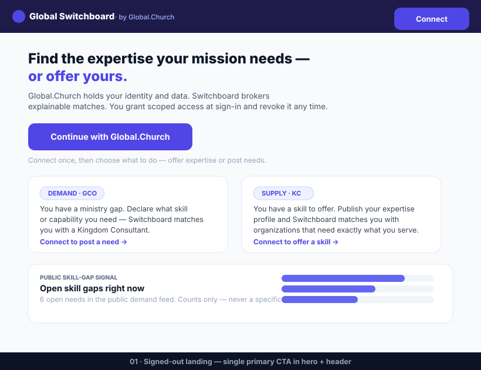
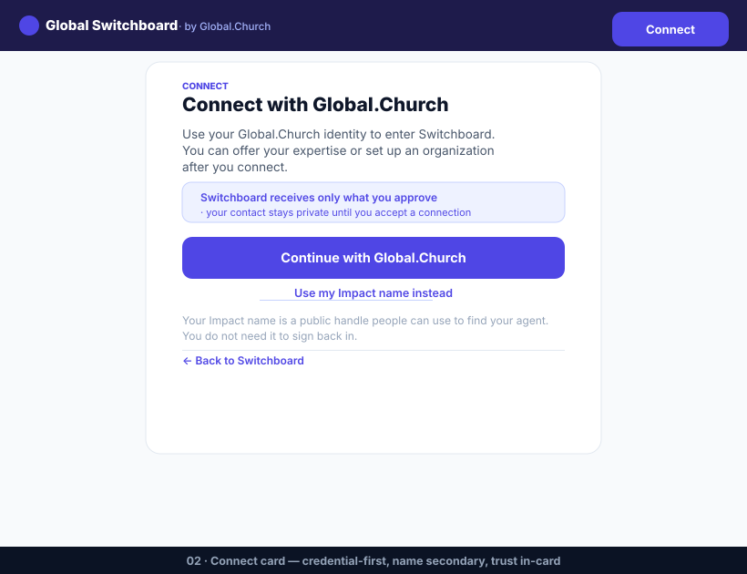
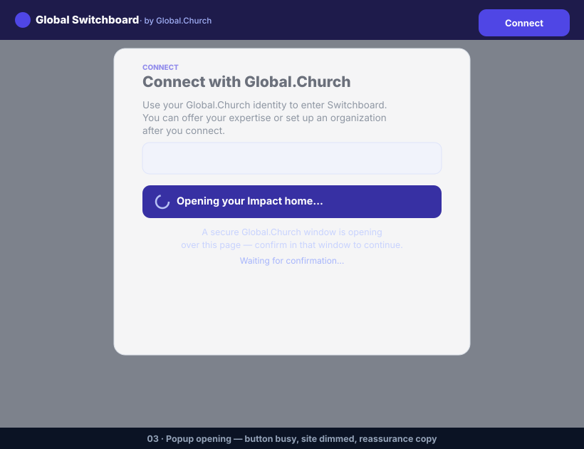
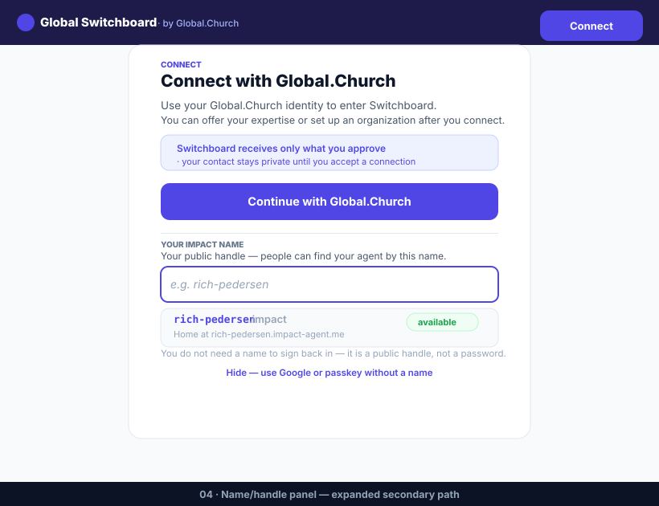
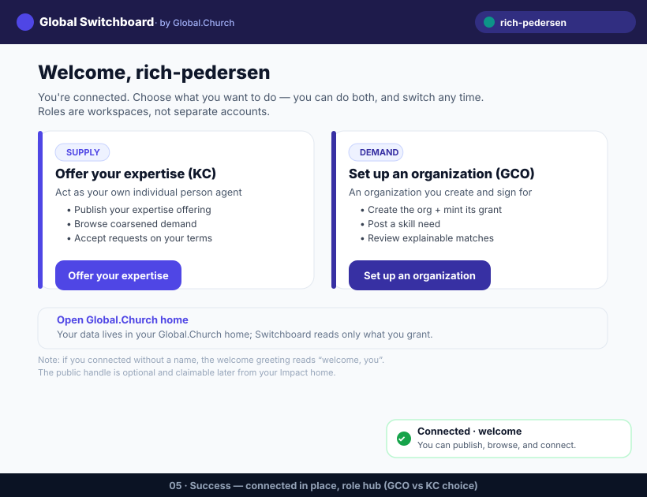
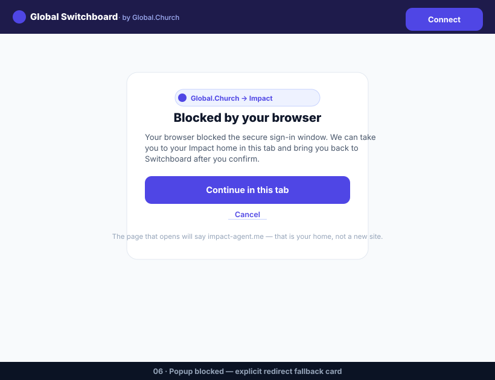
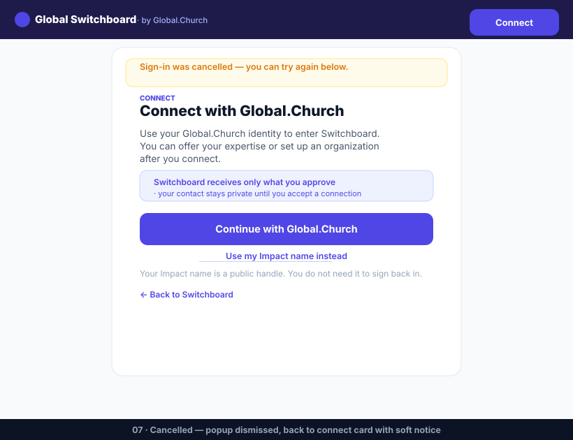
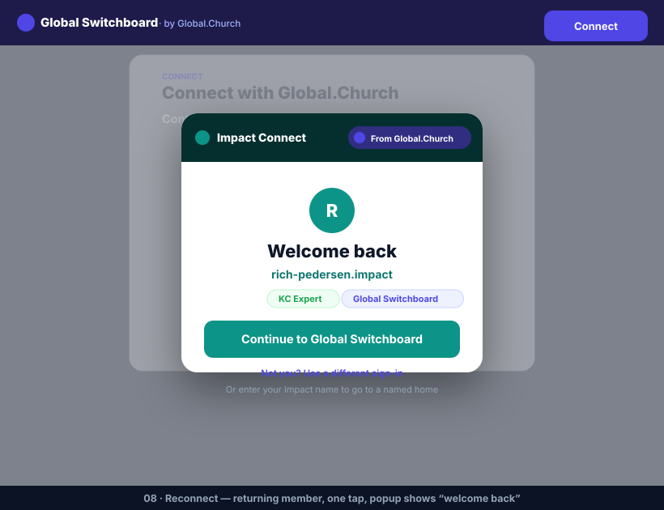
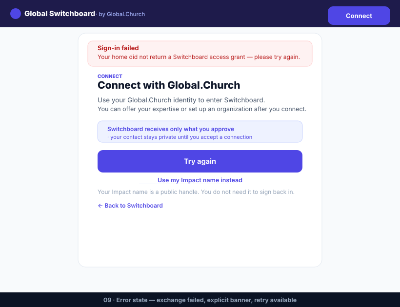
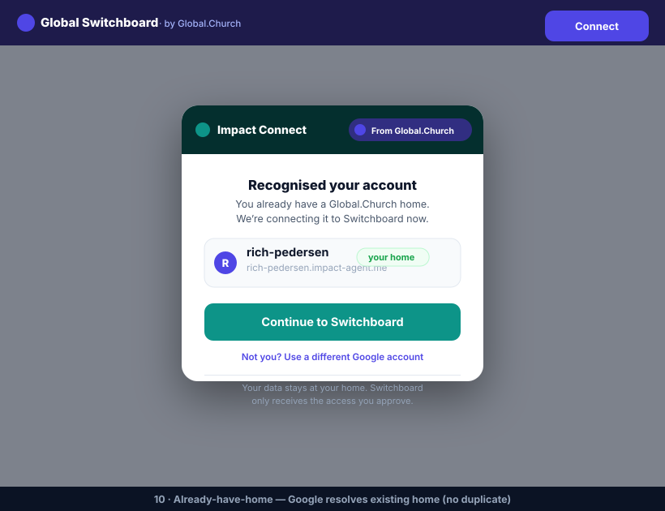

Credential-first connect flow for Global Switchboard (demo-gs). Primary CTA = Continue with Global.Church.
The name field is hidden behind a secondary link. The HandoffBridge new-user variant is removed from this path —
the popup opens directly from the CTA with an in-page loading/dim state.
Variants org-create and reconnect are unchanged.
See specs/258 (companion spec) and the
component-level implementation spec in this directory.

01 · Landing home — single primary CTA "Continue with Global.Church" in hero + header. Informational GCO/KC cards below are NOT role gates.
02 · Connect card — credential-first design. Primary CTA is visible immediately. Name field is hidden behind secondary link "Use my Impact name instead". Trust reassurance in-card.
03 · Popup opening state — button enters busy/loading state, site dims, reassurance copy replaces the bridge interstitial. NO HandoffBridge new-user variant shown.
04 · Name/handle panel — expanded when "Use my Impact name instead" is clicked. Shows input field + .impact / .impact-agent.me preview inline below the primary CTA.
05 · Success → role hub — connected in place (no reload). Identity pill + toast. RoleHub: KC card ("Offer your expertise") + GCO card ("Set up an organization"). Nameless-member note.
06 · Popup blocked — explicit redirect fallback card. Co-brand pill is trust anchor. CTA "Continue in this tab". Fine print explains impact-agent.me is the user's own home.
07 · Cancelled — popup dismissed, back to connect card. Soft warn banner. Same card, same secondary link. No state lost.
08 · Reconnect — returning member. Same connect card (no changes). Popup shows "Welcome back" with identity + role chips. One-tap flow.
09 · Error state — exchange failed. Explicit error banner (no silent fallback). CTA changes to "Try again". Same card layout.
10 · Already-have-home — Google resolves to an existing home. Popup shows recognised identity + single "Continue to Switchboard". No duplicate home created.{kind=link}
{kind=link}
{kind=link}
{kind=link}
{kind=link}
{kind=link}
{kind=link}
{kind=link}
{kind=link}
{kind=link}